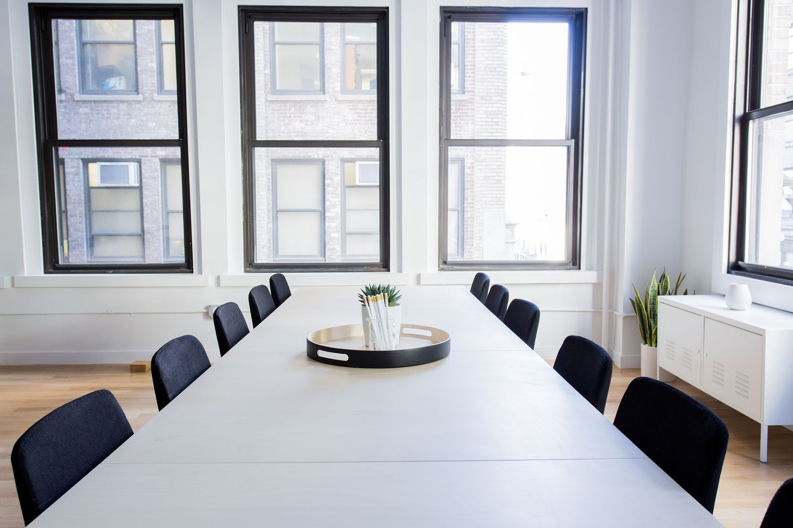
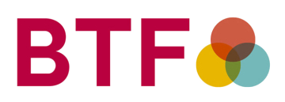

Hem/För organisationer
För organisationer
Kompetens att låna in
Handledning, coaching, föreläsningar och utbildning för arbetsgivare, skola, vård och socialtjänst. På plats hos er, hos oss eller online.
Vilka är vi?
En erfaren och kvalificerad grupp legitimerade psykologer och psykoterapeuter, vana vid uppdrag i komplexa verksamheter.
Flera av oss har arbetat inom psykiatrin, BUP, primärvården, habiliteringen och universitetet. Vi har varit konsulter åt, utbildat och handlett verksamheter som BUP, primärvården, psykiatrin, behandlingshem och HVB, universitet, socialtjänst, Statens institutionsstyrelse, skolor, resurs- och specialskolor samt företagshälsovård.
Vår bas är i centrala Uppsala. Vi tar emot här, arbetar online och kommer ut till arbetsgivare runt om i landet.
Handledning & coaching
Handledning för personalgrupper och studenter.
Tre av oss är utbildade handledare med lång erfarenhet från psykiatri, primärvård, beroendevård, skola och företag. Barry Karlsson handleder med särskilt fokus på LSS, neuropsykiatri och kollegialt stöd.
Verksamhetshandledning
Regelbunden handledning för arbetsgrupper inom vård, skola, socialtjänst och behandlingshem — med fokus på ärenden, metod och arbetsmiljö.
Utbildningshandledning
Handledning för studenter på KBT-utbildningar och för psykologer under specialisering.
Coaching och chefsstöd
Individuell coaching för chefer och medarbetare, och stöd i svåra personalärenden.
Föreläsningar & utbildning
Utbildning i KBT, MI och mindfulness.
Vi håller föreläsningar, workshops och längre utbildningar, anpassade efter verksamhetens behov. Flera av oss undervisar eller har undervisat vid Uppsala universitet.
Föreläsningar och workshops
Om stress och utmattning, oro och ångest, depression, trauma, beroendeproblematik och neuropsykiatri.
Motiverande samtal (MI)
Utbildning i MI på grund- och fördjupningsnivå. Angeli Holmstedt är medlem i MINT, det internationella nätverket av MI-utbildare.
Mindfulnessbaserade program
MBSR, MBCT och MBRP — som personalutbildning eller som insats för en grupp medarbetare.
Rehabilitering
Tillbaka till arbetet, hållbart.
Insatser vid stressrelaterad ohälsa och utmattning — bedömning, behandling och stöd i återgång till arbete, i samarbete med arbetsgivare och företagshälsovård. Vi arbetar med både individen och de förutsättningar som ska tas tillbaka till.
Skadligt bruk på arbetsplatsen
Alkohol, läkemedel och spel i arbetslivet.
Bedömning och behandling vid riskbruk och beroende, och stöd till chefer som behöver hantera en oroande situation. Thomas Alm och Angeli Holmstedt har båda arbetat inom beroendeområdet i decennier, kliniskt och i forskning.
Kontakt för uppdrag
Berätta vad ni behöver.
Vi svarar på frågor om uppdrag, handledning, utbildning och samarbeten. Priser för handledning, utbildning och utredning lämnas på förfrågan.
Handledare
Tre utbildade handledare.
Angeli Holmstedt är dessutom MI-utbildare via MINT och lärare i mindfulnessbaserade program.

Ångest, OCD och beroendeproblem, och stöd till dig som är anhörig. Utbildare i motiverande samtal och lärare i mindfulnessbaserade program.

Legitimerad psykolog sedan 1978. Missbruk och beroende, ångest och depression. Handledare inom psykiatri, primärvård och beroendevård.

Kognitiva utredningar, utvecklingsbedömningar och neuropsykiatri. Forskar om förlust och komplicerad sorg.
Legitimation och medlemskap
